Creating Users and Connections
Logging in as user admin
OmniDB comes only with the user admin. If you are using the server version, the first thing to do is sign in as admin, the default password is admin. You don’t need to login in the app version.
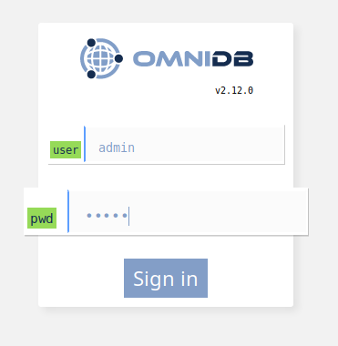
The next window is the initial window.
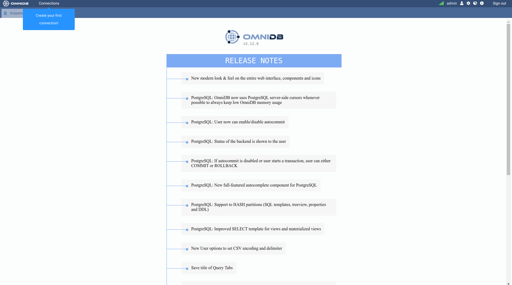
Creating another user
Click on the Users icon on the upper right corner. It will open a popup that allows the current OmniDB super user to create a new OmniDB user.
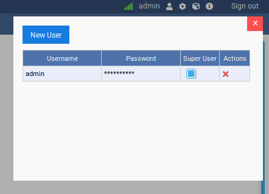
Click the Add new user button (the person-with-plus icon) inside the popup. It inserts a new, blank user row, shown as (pending info) until you fill it in.
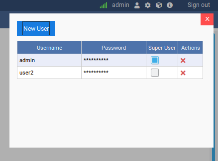
Fill in the username and password. Check if you want this new user to be a super user. This user management window is only seen by super users. When you are done, click on the Save button inside the popup.
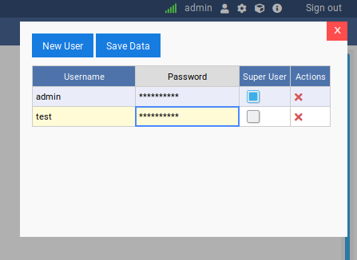
You can create as many users as you want, edit existing users and also delete users by clicking on the red cross at the actions column. Now you can logout by clicking in the Sign Out button in the top right corner.
Signing in as the new user
Let us sign in as the user we just created.
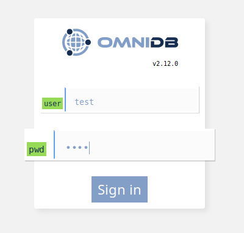
And we can see the window again. Note that now there is no Users icon, because the test user is not a super user. Go ahead and click on Connections on the upper left corner. You will see a popup like this:
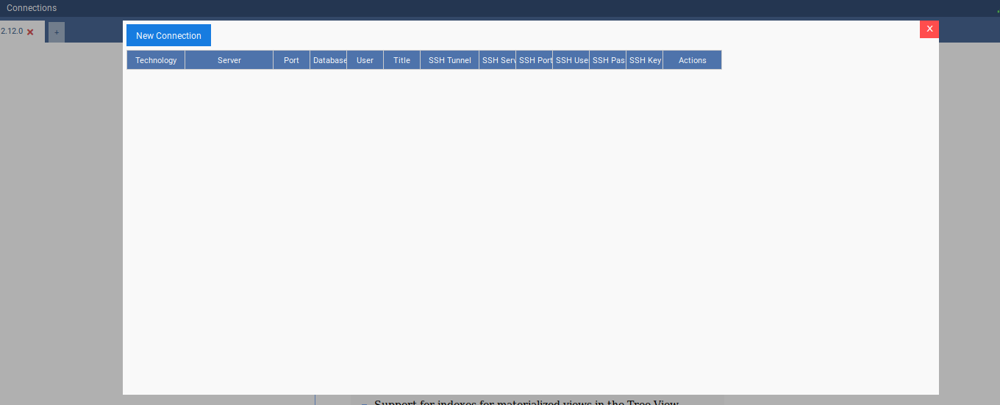
Creating connections
OmniDB supports PostgreSQL, MySQL, MariaDB, Oracle and SQLite.
We will now create one connection to a PostgreSQL database, one connection to an Oracle database and one connection to a MariaDB database. To create the connections you have to click on the button New Connection and then choose the connection and fill the other fields. After filling all the fields for both connections, click on the Save button.
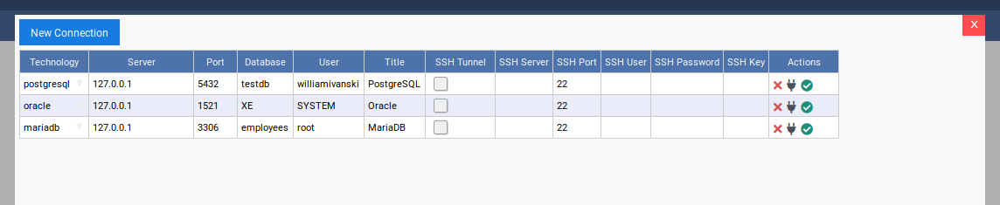
For each connection there is an Actions column where you can delete, test and select them. Go ahead and test the PostgreSQL connection.
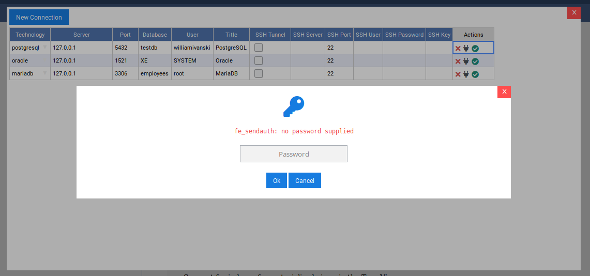
Notice a pop-up appears with the message fe_sendauth: no password supplied.
This is happening because OmniDB does not store the database user password on
disk. Not having any password at hand, OmniDB will try to connect without one,
thus trying to take advantage of automatic authentication methods that might be
in place: trust method, .pgpass file, and so on. As the database server
replies with an error not allowing the user to connect, then OmniDB understands
a password is required and asks it to the user. When the user types a password
in this popup, the password is encrypted and stored in memory.
After you type the password and hit Enter, if the connection to the database is successful you will see a confirmation pop-up.
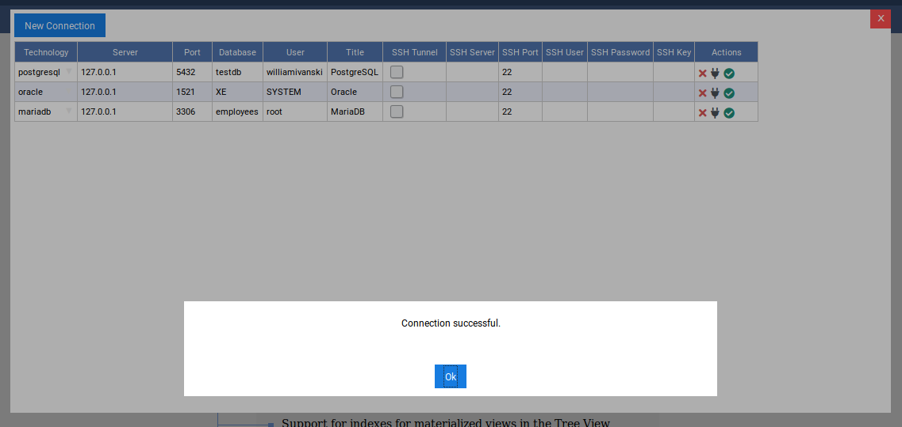
But, if you have trouble of any kind connecting to your PostgreSQL database, the same popup will remain showing the error OmniDB got.
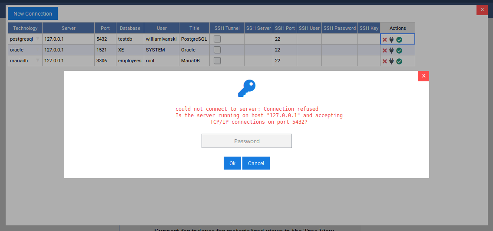
For Oracle, the behavior is similar. When OmniDB first tries to connect to an Oracle database without a password, you will see a message like this:
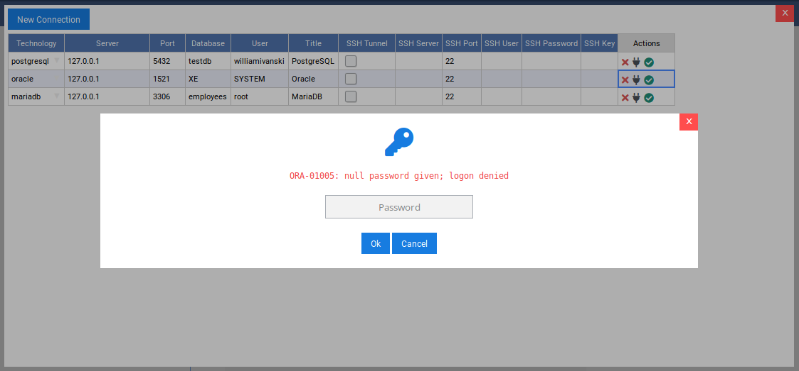
If you have any trouble connection to your Oracle database, the same popup will remain showing the error OmniDB got:
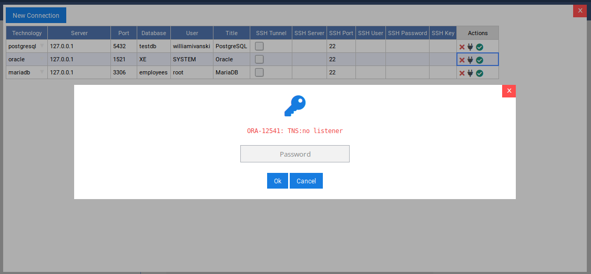
MariaDB and MySQL databases also works in the same way. First time, no password was given:
But if you have any problems, such as database server down:
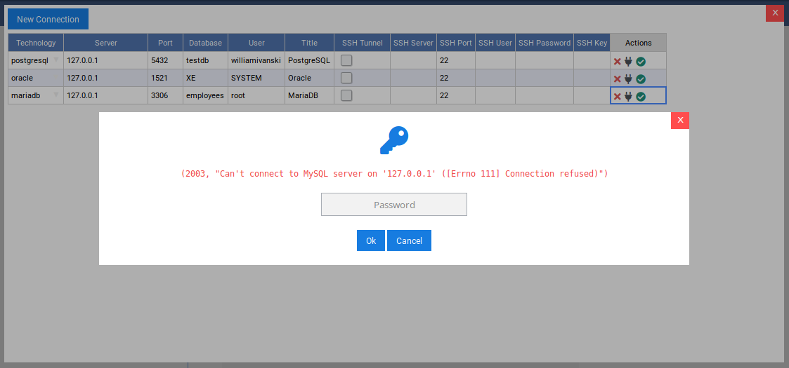
Finally, in the connections grid, if you click on the Select Connection action, OmniDB will open it in a new Connection Outer Tab as we can see in the next chapter.
Using SSH tunnels
OmniDB allows the user to connect to any remote database through SSH tunnels. The user needs to fill SSH tunnel information in each connection in the Connections Grid.
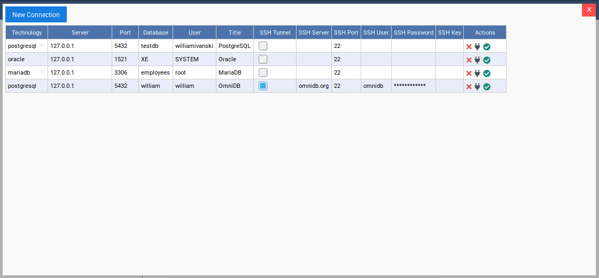
- SSH Server: The server you are connecting to via SSH;
- SSH Port: The port of the SSH server (default is 22, but it can be any port number);
- SSH User: The operating system user name you use to connect to the SSH server;
- Password/Passphrase: The password of the operating system user (or the passphrase for the key below). If you fill the field SSH Key Text File, a password is optional;
- SSH Key Text File: The contents of the local private SSH key you can use to connect to the SSH server. If you fill this field, then you can also fill the field Password/Passphrase, but in this case it will be the passphrase for the SSH private key.
Please note that all information is stored encrypted in your local OmniDB User Database.
While using SSH tunnels, you also need to fill all database fields accordingly. But instead of being relative to the OmniDB server, they will be relative to the SSH Server. This can be done in 2 scenarios as explained below.
If the database is inside the same server as you are connecting to via SSH, then you will have a situation like this:

In this scenario, the database Server will be 127.0.0.1, as the database is
in the same machine as the SSH Server.
But the database can be outside the SSH server, like this:

Here the database Server needs to be 192.168.0.10, as it is the relative
address for the SSH server to connect to the database server.